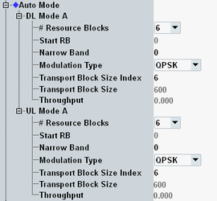

The parameters in this section configure the resource block configuration, modulation type and transport block size for the eMTC auto mode. Option R&S CMW-KS590 is required.
The settings apply if "Scheduling Type" = "eMTC Auto Mode".
To configure the settings, proceed as follows (for UL and DL):
Select the cell bandwidth. See "Physical Cell Setup".
Select the number of resource blocks.
Select the start resource block, the narrowband and the modulation type.
Select the transport block size index.
For valid parameter combinations and background information, see "eMTC Auto Mode".

"# Resource Blocks" selects the number of allocated resource blocks.
"Start RB" specifies the number of the first allocated resource block within the narrowband.
"Narrow Band" selects the narrowband for the first transmission.
"Modulation Type" selects the modulation type and influences the allowed transport block size indices.
"Transport Block Size Index" selects the TBS index. The resulting "Transport Block Size" in bits is displayed
Remote command:Displays the expected maximum throughput in Mbit/s (averaged over one frame). The value is calculated per downlink and uplink stream.
Remote command: